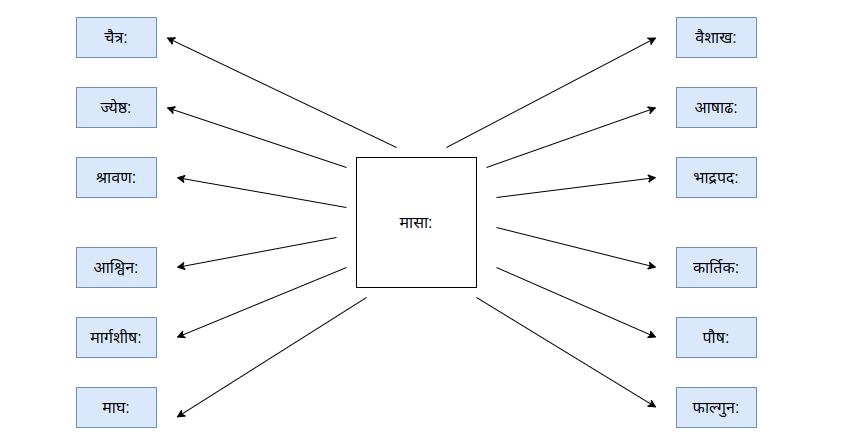

काल: - वेळ - Time
घटी, कालदर्शक: - घडयाळ - watch, clock
वार: वासर: - वार - Day
सप्ताह: , सप्तक: - आठवडा - Week
सप्ताहदिना: - आठवडयाचे दिवस - days in week

साप्ताहिक: (की, कम्) - साप्ताहिक - weekly
दिननिर्देश:

प्रपरह्य:
तेरवा
परह्य:
काल
ह्य:
काल
अद्य
आज
श्व:
उद्या
परश्व:
परवा
प्रपरश्व:
तेरवा
तिथि: (स्त्री), दिनाङ्क: - दिनांक - Date
मास: - महिना - Month
कृष्णपक्ष: , शुक्लपक्ष:
Half Month, Fortnight - अर्धा महिना , पक्ष - अर्धमास: , पक्ष:
मासिक: (की, कम्) - मासिक - monthly
त्रैमासिक: ( की, कम् ) - त्रैमासिक - quarterly
षड्मासिक: ( की, कम् ) , अर्धवर्षीय: (या, यम्) - अर्धवर्षीय - half-yearly
द्वादश मासा:

षड् ऋतव: (चन्द्राधारित) - ऋतु - seasons
**दक्षिणायनम्, उत्तरायणम् - दक्षिणायन, उत्तरायण - **
२२ डिसेंबर - २१ जुन: उत्तरायणम् २२ जुन - २१ डिसेंबर: दक्षिणायनम्
वर्षम् , संवत्सर: - वर्ष - Year
वार्षिक: (की, कम्) - वार्षिक - yearly
घण्टा (स्त्री) - तास - hour
निमेष: - मिनिट - minute
क्षण: , निमिष: - सेकंद - second
प्रात: (अ) , प्रातम् (अ) , प्रातःकाल: - सकाळ - morning
दिन: , दिवा (अ) - दिवस - Day
मध्याह्न: , मध्याह्नकाल: - दुपार - afternoon
सायम् (अ) , सायङ्काल: - संध्याकाळ - Evening
रात्रि: , निशा , यामिनी - रात्र - Night
चिरात् , चिरम् - मोठा काळ - long time
इदानीम् - आता - now
शनै: - हळू - slow, slowly
शीघ्रम्, झटिति - पटकन, लवकर - quickly
तत्क्षणम् , समनन्तरम् - लगेच, तातडीने - immediately
पूर्वम् - आधी - before
पञ्चमीविभक्त्या: अपेक्षा
उदा.
- षड्वादनात् पूर्वम्
- मासात् पूर्वम्
- तत: पूर्वम् (तत: = अव्ययम्)
परम् , पश्चात् , तदनन्तरम् , अनन्तरम् - नंतर - after
पञ्चमीविभक्त्या: अपेक्षा
उदा.
- षड्वादनात् परम्
- मासात् परम्
- तत: परम् (तत: = अव्ययम्)
पश्चात् , तदनन्तरम् , अनन्तरम् - नंतर - later, afterwards
त: , आ - पासून - from
पञ्चमीविभक्त्या: अपेक्षा
उदा.
- अद्यत: , अद्यारभ्य (अद्य + आरभ्य (अ))
- वर्षात्
- आबाल्यात्
पर्यन्तम् - पर्यंत - till
उदा. (समासं कृत्वा)
- नववादनपर्यन्तम्
- अद्य यावत् (आजपर्यंत)
पूर्व , गत - मागचा (-ची, -चे) - pre, back
उदा. (समासं कृत्वा)
- पूर्वतिथीय धनादेश:
- गतमास:
उत्तर, आगामि, अग्रिम - आगामी , पुढचा (-ची, -चे) - future, post
उदा. (समासं कृत्वा)
- आगामितिथीय धनादेश:
- उत्तरमास:
- अग्रिमवर्षम्
सकृत् , एकवारम् , एकदा - एकदा - once
वारम् - वेळा - times
पूर्वकालिक: (की, कम् ) - पूर्वकालीन - before time
उत्तरकालिक: (की, कम् ) - उत्तरकालीन - after time
समकालिक: (की, कम् ) - समकालीन - same time
सार्वकालिक: (की, कम् ) - सार्वकालीन - all time
अकालिक: (की, कम् ) - अकाळी / अवकाळी - untimely
क: समय: - किती वाजले - what time
सामान्यत: प्रथमाविभक्ति:
उदा.
- द्विवादनम्
- पादोन-पञ्चवादनम्
- एष: वसन्तऋतु:
कदा - कधी (किती वाजता) - when
काल निर्देशाय सप्तमीविभक्ति: प्रयोजनीया |
उदा.
- रात्रौ / रात्र्याम् , निशायाम्, सप्तवादने, एतस्मिन् वर्षे , मार्चमासे इ.
- एकघण्टाया: परम् ( अव्यय अत: पञ्चमीविभक्ति:)
विशेषांशः
https://www.facebook.com/share/N9rjngENo5M12i57/
भारतीय-कालगणना चन्द्रसुर्याधारिता (उभौ) अस्ति
- वसन्त-संपात (Vernal equinox) - सामान्यत: २०/२१ मार्च (दिन-रात्रिकाल: समान:)
- शरद-संपात (Autumnal equinox) - सामान्यत: २२/२३ सप्टेंबर (दिन-रात्रिकाल: समान:)
- उत्तरायण (winter solstice ) - सामान्यत: २१/२२ डिसे.
- दक्षिणायन (summer solstice) - सामान्यत: २१ जुन
- यदा पृथ्वी चन्द्रसूर्ययो: मध्ये अस्ति (चन्द्रपृथ्व्यो: तथा सूर्यपृथ्व्यो: कोण: १८० (180 अंश) अस्ति वा चन्द्र:, पृथ्वी, सूर्य: आवल्यां अस्ति ), तदा पूर्णिमा अस्ति | तथैव यदा चन्द्र: पृथ्वीसूर्ययो: मध्ये अस्ति, तदा अमावस्या अस्ति |
चन्द्र-सूर्यपरस्परगतिम् अनुसृत्य निश्चिति: भवति ( तिथ्यारम्भ: प्रात: सार्धअष्टवादने अपि शक्यते, तथा तिथ्याः कालः १९ - २६ घण्टा यावत् भवितुम् अर्हति) (सुर्योदय-सुर्यास्तौ अनुसृत्य न!!)
प्रतिदिनं पृथ्वी स्वप्रदक्षिणं (३६० अंश) करोति, तावत् चन्द्र: १३.३ कोणं (१३.३ अंश) अग्रे सरति (चन्द्र: प्रतिदिनं नक्षत्रे अस्ति, नक्षत्रं ~= १३.३ कोणं (१३.३ अंश), अत: चन्द्राय पृथ्वीप्रदक्षिणाया: कृते ३६० / १३.३ ~= २७ दिना: आवश्यका:)
२७ नक्षत्राणि सन्ति |
पूर्णिमा यस्मिन् नक्षत्रे भवति (यस्मिन् नक्षत्रे चन्द्र: अस्ति), तत: मासानां नामनिर्धारणं कृतम् |
- यदा पूर्णिमा भवति तदा चन्द्र: यदि चित्रानक्षत्रे अस्ति, अत: स: मास: चैत्र:
- विशाखा नक्षत्रं अत: वैशाख:
- ज्येष्ठा नक्षत्रं अत: ज्येष्ठ:
- पूर्वाषाढा / उत्तराषाढा नक्षत्रं अत: आषाढ:
- श्रवण नक्षत्रं अत: श्रावण:
- पूर्वाभाद्रपदा / उत्तराभाद्रपदा नक्षत्रं अत: भाद्रपद:
- अश्विनी नक्षत्रं अत: आश्विन:
- कृत्तिका नक्षत्रं अत: कार्तिक:
- मृगशीर्ष नक्षत्रं अत: मार्गशीर्ष:
- पुष्य नक्षत्रं अत: पौष:
- मघा नक्षत्रं अत: माघ:
- पूर्वा / उत्तरा (पूर्वाफाल्गुनी / उत्तराफाल्गुनी) नक्षत्रं अत: फाल्गुन:
भरणी, रोहिणी, आर्द्रा, पुनर्वसू, आश्लेषा, हस्त, स्वाति, अनुराधा, मूल, धनिष्ठा, शततारका, रेवती